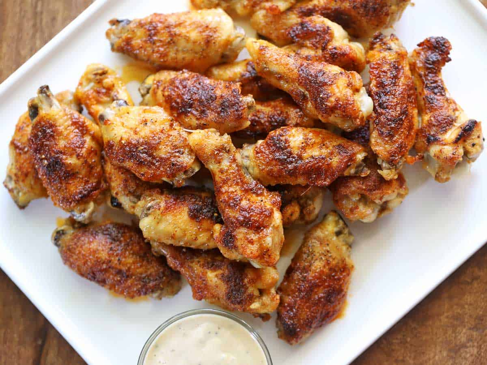

Navigation
Baked Chicken Wings

Description
These crispy boys are a quick and easy meal for any occasion.
Ingredients
- Fresh Chicken Wings
- Butter
- Kosher Salt and black pepper
- Garlic powder and Paprika
Steps
- Toss the wings in butter and sprinkle them with your spices.
- Arrange them on a rimmed baking sheet with a wire rack.
- Bake them on 400 degrees for 40 minutes.
- For extra crispy, lower the temperature to 170 degrees for 30 more minutes.